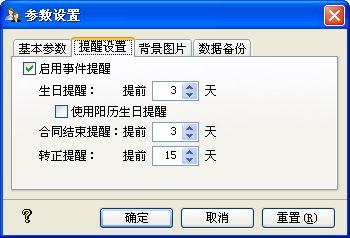

| 基本数据 - 事件提醒 |
|
系统支持近期生日、近期合同到期员工及近期需转正员工提醒功能，您可以通过[系统]->[事件提醒]来查看，其界面如下图所示： 您可以把所显示的数据进行导出或打印操作，可以在这里更改事件提醒所提前的天数。系统支持事件自动提醒功能，您可以在[选项]->[提醒设置]处设定，可以设定是否启用自动提醒功能，以及每类事件提醒的提前天数。  而当勾选[启用事件提醒]时，则当登录系统后，程序会判断每个事件是否有适合条件的记录，若没有则不显示事件提醒窗体，若有则动画显示事件提醒窗体，并且其Tab页面自动跳至有数据的那一个Tab标签。 |